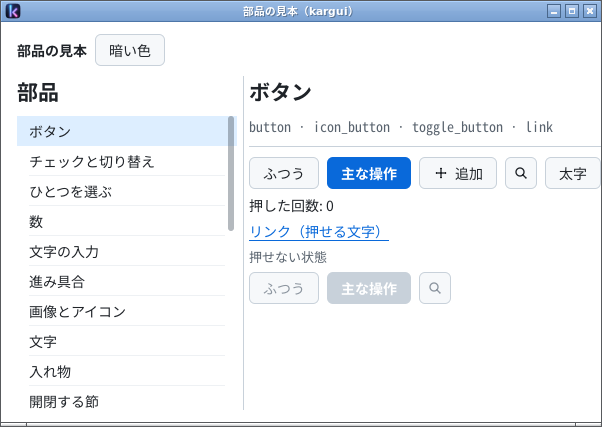
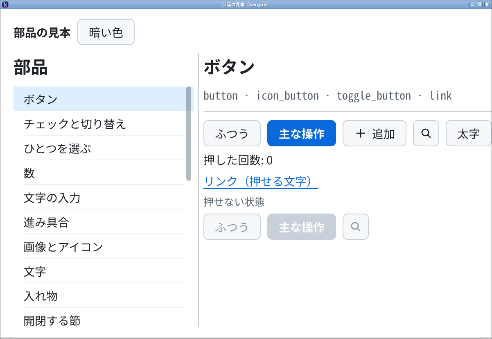
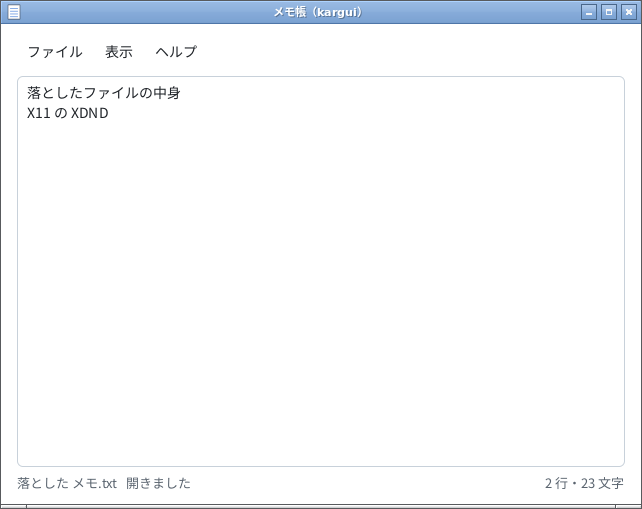
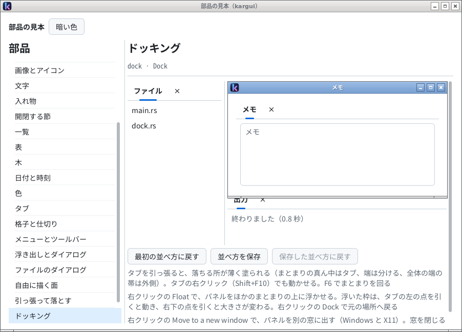

kargui 開発レポート ・ 第 21 章
本物の X サーバーと切り分け
0.4 の次の段階として、本物の X サーバーで kargui の X11 の版を確かめました。検証機に Hyprland を通らない環境を 2 つ用意し、X11 にだけある所を順に試して、不具合を 4 つ直しました。途中で作者から質問があり、最小化した窓の描き直しの決め方も話し合いました。
この章で分かること
- Hyprland が原因の不具合と X11 が原因の不具合を、環境を分けて切り分ける方法
- 開いたまま表示の倍率が変わった時に、X11 のアプリが追う仕組み
- 日本語入力の答えを待つ間に、Ctrl が消えた理由
- 最小化した窓の描き直しを減らしても、中身の処理を遅らせない作り方
- 窓の管理役の枠を数に入れないと、開くたびに窓がずれる理由
3 つの X11 の環境
検証機の普段の画面は Hyprland（Wayland の合成）です。X11 のアプリも動きますが、Hyprland の中の Xwayland が間に入ります。作者からは「Hyprland が原因の不具合と X11 が原因の不具合を、今は分けられないのでは」と聞かれました。
実は、確かめには Hyprland を通らない X サーバーを使っていました。3 つの環境を並べます。
| 環境 | 中身 | Hyprland |
|---|---|---|
| Xvfb と openbox | 画面を持たない X サーバー。画面を切り替えずに確かめられる | 関わらない |
| 本物の Xorg と openbox | ノートの画面と入力の装置を、X サーバーが直接使う。2 つ目の仮想端末（vt2）で動かし、Hyprland は 1 つ目に残す | 関わらない |
| Xwayland | Hyprland の中で X11 のアプリを出す | 関わる |
上の 2 つで出る不具合は、X11 そのものか kargui の X11 の版が原因です。Xwayland だけで出る不具合は、Hyprland か Xwayland が原因です。この章の不具合は、どれも Hyprland を通らない環境で再現してから直しました。なお、Hyprland の上の kargui は既定で Wayland の版を使います。X11 の版が Xwayland で動くのは、KARGUI_BACKEND=x11 で選んだ時だけです。
窓の管理役には openbox を使いました。X11 では、題の帯を描くのも窓を置くのも窓の管理役です。openbox は題の帯の付いた枠で窓を包みます。枠の厚さは、左右が 1、上が 24、下が 5 画素でした。
開いたまま倍率を追う
X11 のアプリは、表示の倍率を X のリソースの Xft.dpi から読みます。96 なら 1 倍、144 なら 1.5 倍です。kargui はこれを、開いた時に 1 回読むだけでした。Windows には倍率が変わった知らせ（WM_DPICHANGED）がありますが、X11 にはありません。
そこで、Xft.dpi の入っている根の窓の値（RESOURCE_MANAGER）を見張ることにしました。値が変わると、X サーバーが PropertyNotify という知らせを送ります。その時に読み直し、倍率が変わっていれば、窓の論理の大きさ（倍率 1 の時の大きさ）を保って画素の大きさを変えます。
| Xft.dpi | 倍率 | 窓の大きさ | 最小の大きさ |
|---|---|---|---|
| 144（開いた時） | 1.5 | 1350 × 930 | 900 × 600 |
| 96 | 1 | 900 × 620 | 600 × 400 |
| 192 | 2 | 1800 × 1240 | 1200 × 800 |
窓の最小の大きさも、窓の管理役へ画素の数で伝えています（WM_NORMAL_HINTS）。これを新しい倍率で送り直さないと、倍率を下げた時に窓を小さくできません。直す途中でこれに気づき、倍率が変わるたびに送り直すようにしました。本物の Xorg では、96 の時に 300 × 200 へ縮めようとすると、600 × 400 で止まりました。そこから 192 に変えると、窓は 1200 × 800 になりました。

Xft.dpi が 96（倍率 1）。最小の 600 × 400 まで縮めた窓（本物の Xorg）。
止まって見えた待ち方
倍率の確かめの途中で、作者から「止まっているように見える」と言われました。調べると、試験と組み立ては 30 分以上前に通っていました。止まっていたのは、私が書いた「終わるのを待つ」命令です。
until s=$(systemctl --user is-active 単位) && [ "$s" != active ]; do sleep 15; donesystemctl is-active は、終わった単位に inactive と出し、終了コード 3 で終わります。そのため && の右の比べが行われず、条件はいつまでも偽のままでした。同じ日に 2 回目の誤りでした。今は、終わるまで戻らない systemd-run --wait か、そのプロセスが終わるまで待つ tail --pid を使っています。
systemctl is-active のように、状態を文字で出す命令は、状態によって終了コードを変えます。待つ条件に && でつなぐと、待ちたい状態になった時に限って条件が成り立ちません。終わりを待つ時は、終わるまで戻らない形の命令を使ってください。
X11 にだけある所を試す
Wayland では、合成が窓の絵を覚えていて、窓の位置はアプリから見えません。X11 では、アプリと窓の管理役の受け持ちが違います。そこで、X11 にだけある所を選んで試しました。
| 試したこと | 結果 |
|---|---|
| 隠れた後の描き直し | 問題なし。ほかの窓（xlogo）を重ねて閉じた後、窓の中身が前と同じ |
| ほかのアプリとのクリップボード | 問題なし。xclip と日本語を受け渡せた。2 MB の往復は、受け取りを分割の形（INCR）で受けた |
| キーの押し続け | 問題なし。1.5 秒の押し続けで x が 23 回入った |
| ほかのアプリからファイルを落とす | 問題なし（下の写真） |
| 2 MB を貼った後の Ctrl+A と Ctrl+C | 直した（次の節） |
| 最小化した間の描き直し | 直した（その次の節） |
| 別の窓を開き直した時の位置 | 直した（最後の節） |
ファイルを落とす確かめには、引っ張り元のアプリが要ります。Python の部品（python3-xlib）で、ファイルを落とす決まり（XDND）の知らせを送り、ファイルの一覧を渡す小さな道具を書きました。マウスは動かしませんが、窓に届く知らせは本物の引っ張り元と同じです。メモ帳はメニューの行では「受け取らない」、本文の上では「写して受け取る」と答えました。落とすと、日本語と空白を含む名前のファイルを開きました。

Ctrl が消えた
家計簿の入力欄に 2 MB の文字を貼った後、Ctrl+A と Ctrl+C が効かなくなりました。記録では、貼る時の Ctrl+V までは ctrl: true で届いていました。その後の Ctrl+A は ctrl: false で届き、「a」が入力されていました。
kargui は、キーを先に日本語入力（fcitx5 か IBus）へ D-Bus で渡します。日本語入力が使わなかったキーは、答えが来てからアプリへ渡します。アプリへ渡す中身（キーの種類・修飾キー・打つ文字）は、答えが来た時の XKB の状態から作っていました。順番に並べると、次のようになります。
- Ctrl を押す。X サーバーが修飾キーの状態の知らせ（XkbStateNotify）を送る。
- A を押す。kargui は A を日本語入力へ渡し、答えを待つ。
- A と Ctrl を離す。修飾キーの状態の知らせが届く。
- 2 MB の欄は 1 フレームに約 1.1 秒かかる。その間に、3 の知らせが先に処理される。
- 日本語入力の答えが届く。この時の状態は「Ctrl なし」なので、A は文字の「a」になる。
直し方は、キーを押した時に中身を作り、待ち行列に入れておくことです。答えが来たら、作っておいた中身をそのまま渡します。Shift で大文字になるかどうかも、押した時の状態で決まるようになりました。Wayland の版は日本語入力の答えを待たずにキーを渡すので、この競合は起きません。
重いフレームの中で素早く打てば、2 MB の文字が無くても起きる不具合です。2 MB の欄が重かったこと自体は、次の章で扱います。
最小化した窓の描き直し
見本の「進み具合」のページを開いたまま最小化し、CPU の時間を測りました。最小化の間も、見えている時と同じだけ使っていました。spinner は 33 ミリ秒ごとのタイマーで描き直します。kargui は、窓が画面から外れた知らせ（UnmapNotify）を扱っておらず、見えない窓へ描き続けていました。
画面から外れている間は、タイマーと動きの描き直しを 1 秒に 1 回までに間引くようにしました。Windows の版も、最小化した窓に 1 秒に 21 回描いていたので、同じ形にしました。
| 項目 | 直す前 | 直した後 |
|---|---|---|
| X11 の CPU の時間（5 秒の間） | 0.25 秒 | 0.01 秒 |
| X11 の描いた回数 | 1 秒に約 30 回 | 1 秒に 1 回 |
| Windows の描いた回数 | 1 秒に 21 回 | 1 秒に 1 回 |
ここで作者から質問がありました。エンコードのように 1〜2 時間かかる処理を動かしたまま最小化し、ほかのことをする使い方はよくあります。見た目の描き直しは減らしてよいが、中身の処理が遅くなるのは避けたい、という内容でした。
確かめるため、別のスレッドで計算を回し続け、0.25 秒ごとに Waker で窓を起こすアプリを作りました。見えている 5 秒と最小化の 5 秒を 3 回繰り返し、切り替えた直後の 1 秒を外して平均しました。
別のスレッドの計算の量は、最小化しても変わりませんでした。最小化の間に view が呼ばれた 1 秒に 4 回は、Waker で起こした回数と同じです。Waker の知らせは間引かず、すぐに view を呼びます。
遅れるのは、view の中や request_frame_after のタイマーで処理を進める作り方です。たとえば「0.1 秒ごとに終わったかを確かめ、終わったら次のファイルを始める」形では、最小化の間は 1 ファイルごとに最大 1 秒待ちます。部品の見た目の描き直しだけを間引く案も示しましたが、作者は今の形に決めました。その代わり、request_frame・request_frame_after・Waker の説明に、長い処理は別のスレッドで動かして Waker で知らせる、と書きました。
view の中で少しずつ処理したり、request_frame_after で終わったかを確かめたりすると、窓を最小化した間は 1 秒に 1 回しか進みません。長い処理は別のスレッドで動かし、結果ができたら Waker::wake で窓を起こしてください。スレッドの速さは窓の状態に左右されません。
開くたびに窓がずれた
ドッキングの「新しいウィンドウへ移動」で出した窓は、並べ方を保存して開き直せます。X11 で保存と開き直しを繰り返すと、開くたびに窓が右へ 1、下へ 24 画素ずれました。

| 回 | 渡した場所 | 中身の左上 | 覚えた場所 |
|---|---|---|---|
| 最初 | 953, 374 | 954, 398 | 954, 398 |
| 1 回目の開き直し | 954, 398 | 955, 422 | 955, 422 |
| 2 回目の開き直し | 955, 422 | 956, 446 | 956, 446 |
窓の管理役は、アプリが渡した場所に外枠の左上を置きます。一方、kargui の X11 の版は、窓の場所を読む時に中身の左上を「外枠の左上」として返していました。ずれた 1 と 24 は、openbox の枠の左と上の厚さです。
窓の管理役は、枠の厚さを _NET_FRAME_EXTENTS という値で窓に付けます。これを読み、中身の左上から枠の左と上の厚さを引いて、外枠の左上にしました。直した後は、2 回開き直しても中身の左上は 954, 398 のままです。あわせて、X11 の版が主の窓の Options::position を使っていなかったのも直しました。ファイルの閲覧の見本を --pos 200,150 で開くと、外枠の左上が 200, 150 に来ます。
Windows の版は、OS が外枠の場所を返すので、この問題はありませんでした。Wayland は窓の場所をアプリに見せないので、別の窓に出す機能を作っていません（第 14 章）。
次の段階
X11 の版は、本物の X サーバーで一通り確かめました。残りは、窓の外への引っ張り出しと、中ボタンでの貼り付け（PRIMARY の選択）です。次の章では、2 MB の文字で重かった入力欄の直しを書きます。